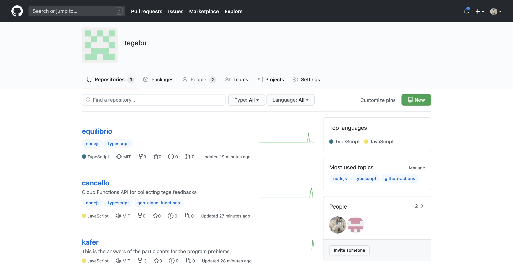

てげメンバーの部員紹介ページを作成し、リリースしました

ドメインについて§
今回のリリースは、今まで最も大きなリリースです。
ドメイン移行までのマイルストーンは全て完了し、てげぶのドメインの移行が完了していることを報告します https://www.tegebu.com/ 。
新サイトでは、私たちのテーブルゲームの紹介や、最新トレンドの動的更新、ページの整理整頓、外部リンクなどの見直しなど数えきれない変更を行ってきました。
以前の記事でも紹介していますが、新テーマは明るく仕上がっています（真っ暗なテーマに、さよなら😁）
これに伴い、旧てげぶサイトについては、Archiveを行っています。およそ1年間使用していました。
てげ部の部員ページについて§
部員ページはいわゆる、メンバーページにあたります。 今後も情報を部員更新する予定がありますので、お楽しみに！ https://www.tegebu.com/members/
ホスティングの場所を変更§
開発では、Netlifyを使用していましたが、Github Actionsを使うことで、今後の開発がさらに行いやすいであろうことから、GIthub Pagesに移行しました （※ 現在もNetlifyへのデプロイ自体は行っています。）
開発について§
開発において、最も大きなニュースは、Organizationへ全面的に移行し、てげぶのリポジトリの集約に努めたことが挙げられます。

開発に携わるのは、私（@yoshixmk）と@jamashitaです。
我々は、いつも遊び心を持って開発してます。
今回のリリースでも、あの有名な恐竜ゲームをひっそり含めてみました。
また新しいニュースが届けられるように、今日もまたコミットを続けています。 テーブルゲーム、ボードゲームと、エンジニアリングを掛け合わせることにご興味がある方は、ぜひご連絡ください。
Mail: info@tegebu.com
Twitter: https://twitter.com/tegebu